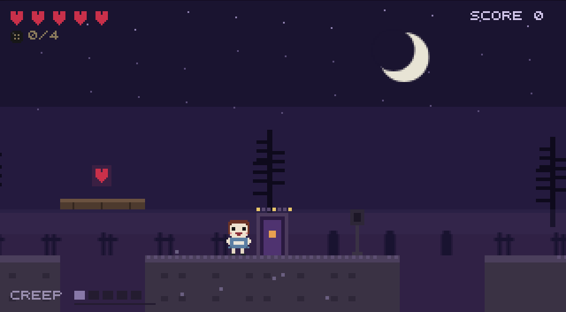
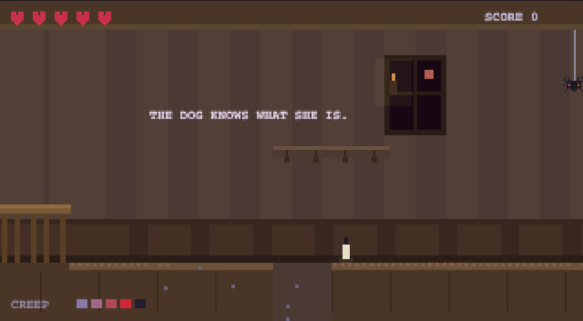
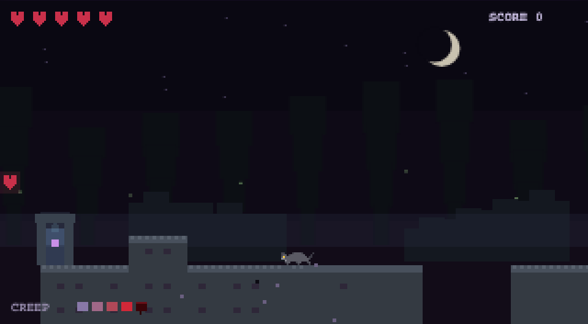
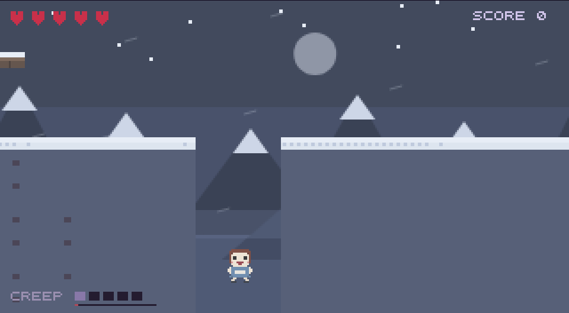
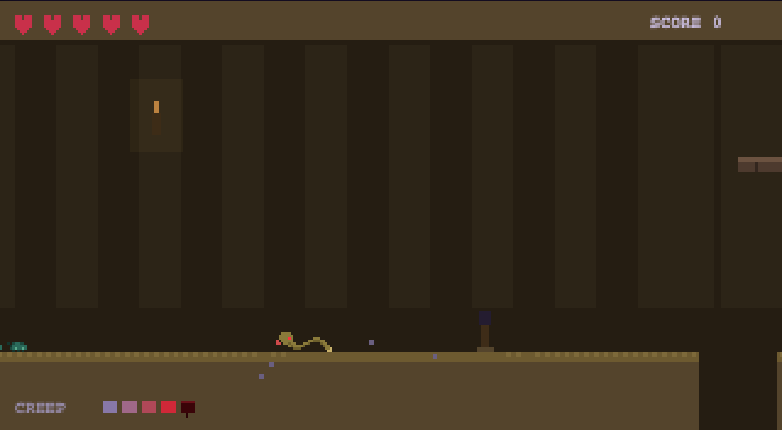
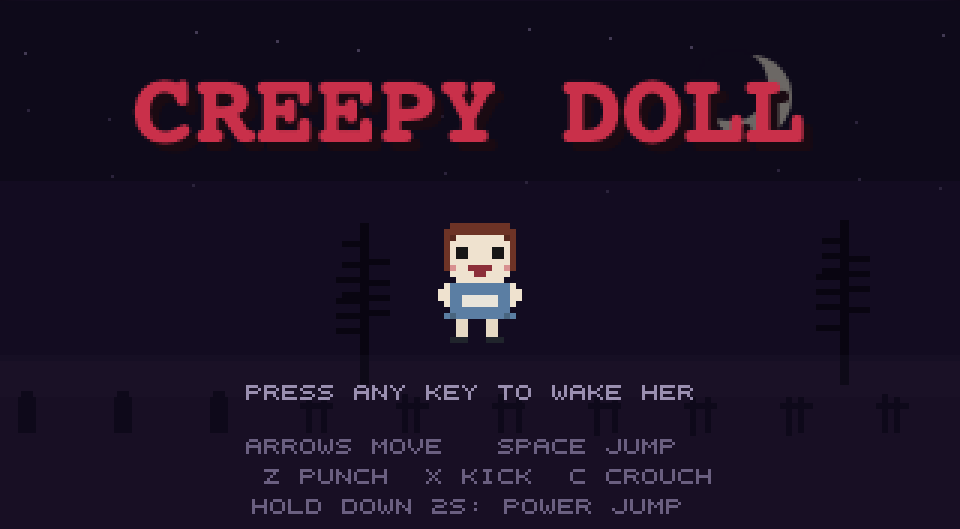
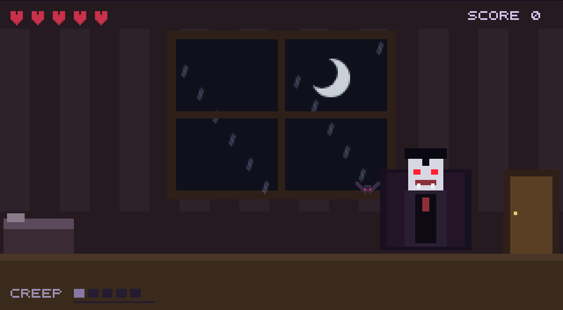
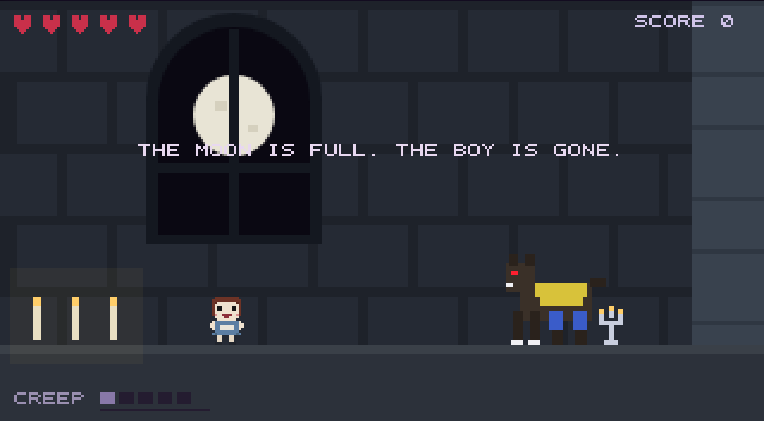
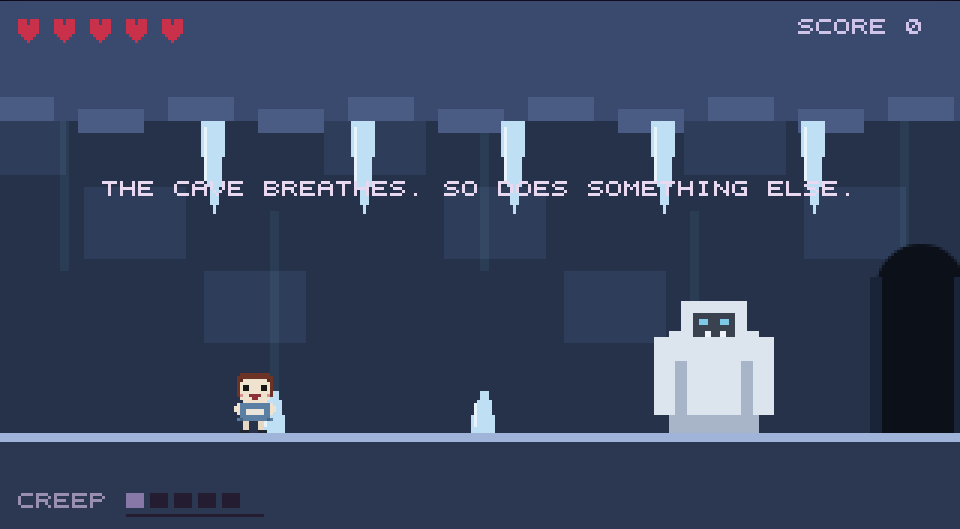
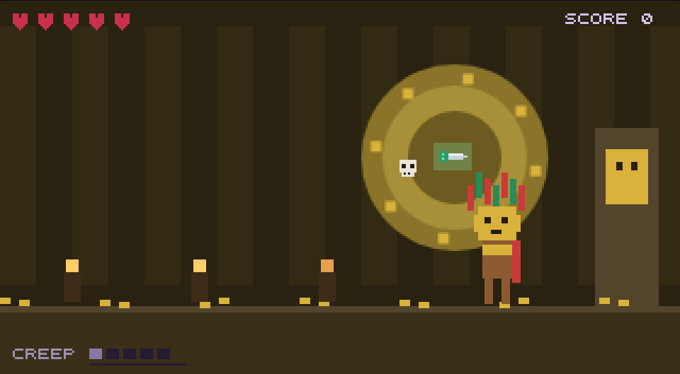

she only ever wanted a friend.
A five-level 8-bit chase through night roads, a haunted house, deep woods, frozen peaks, and an ancient tomb.
▶ PLAY FREE IN YOUR BROWSERno install · no account · just a doll and a boy who runs
A porcelain doll wakes on a moonlit road. Somewhere ahead, a boy is running.
The further she goes, the worse she looks, and the lullaby goes out of tune with her.
Tag him. That's all. Tag him and be friends.
The blood-moon road. The boy's own house. The deep woods, a snowy ascent, and a tomb older than any of it.
The boy keeps changing: a bat-throwing count, a clawed werewolf, an icicle-shrugging yeti, a skull-hurling gold-masked god.
Doll toss, balloon darts, coffin shuffle, tarot pairs, bell toll, crow gallery, grave dig, glyph rites, scarab races, spear gauntlets: the carnival follows her everywhere.
Five are hidden along the road. Find four and she gets to see again. Worth it, mostly.
Checkpoints that cost seconds, not runs. Death takes a heart; the light gives her back.
Invincibility, game speed, infinite hearts, reduced flash, skip-minigames, all one Esc away, all saved.










Coyote time and buffered jumps are built in. The game reads intent, not frame-perfect input.
works in any modern desktop browser